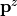
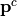
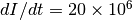

POSITION¶
Describes a coil position for a TMS simulation
Initialization¶
Python
from simnibs import sim_struct s = sim_struct.SESSION() tms_list = s.add_tmslist() pos = tmslist.add_position()
MATLAB
s = sim_struct('SESSION'); s.poslist{1} = sim_struct('TMSLIST'); s.poslist{1}.pos;
Attributes¶
centre: list/array of floats or string/character array (Python/MATLAB)
Description: Center of the coil. Can either be a set of coordinates in the head model or the name of an EEG 10-10 electrode position
Example Python/MATLAB
Center the coil in Cz
coil.centre = 'Cz'
Center the coil using the coordinates
coil.centre = [-1.2, -15.8, 116.0]
Note: More about coordinates in SimNIBS. Coordinates will be projected to the surface and then added the distance. Ignored if matsimnibs is set.
pos_ydir: list/array of floats or string/character array (Python/MATLAB)
Description: Position along the coil’s y axis. Can either be a set of coordinates in the head model or the name of an EEG 10-10 electrode position. The coil y axis is a prolongation of the handle (
see here for how SimNIBS defines the coil axes).Example: Python/MATLAB
Set-up a coil centered in C3 and pointing posteriorly
pos.centre = 'C3' pos.pos_ydir = 'CP3'
Note: More about coordinates in SimNIBS. Coordinates will be projected to the surface. Ignored if matsimnibs is set.
distance: float, optional
Description: Distance from the coil to the scalp, in mm.
Default: 4mm
Note: Ignored if matsimnibs is set.
didt: float, optional
Description: Rate of change of current in the coil, in A/s. In some stimulators, this value is given in the screen short after a pulse is give.
Default: 1e6 A/s
matsimnibs: 4x4 list/array of floats (Python/MATLAB)
Description: Affine transformation matrix defining coil position and directions. The matrix has the form
![\left[\begin{array}{cccc}
p^x_1 & p^y_1 & p^z_1 & p^c_1\\
p^x_2 & p^y_2 & p^z_2 & p^c_3\\
p^x_3 & p^y_3 & p^z_3 & p^c_2\\
0 & 0 & 0 & 1
\end{array}\right].](../../_images/math/f191d9a503343656eaff40f58c2a5b539cfbb25c.png)
Where
, and  are the x, y and z coil axes (
see here for how SimNIBS defines the coil axes). Those should be mutually orthogonal and span a right-handed coordinate system.  is the center of the coil. More about coordinates in SimNIBS.
note: Be careful when setting up simulations this way. If the directions are set wrongly, the coil might end up inside the head.
Examples¶
Set up a simulation with a coil centered in C3, pointing posteriorly (towards CP3), with a distance of 5mm from the cortex and a  A/s.
Python/MATLAB
pos.centre = 'C3' pos.pos_ydir = 'CP3' pos.distance = 5 pos.didt = 20e6
Run a simulation with the coil placed at (-1.2, -15.8, 120.0), pointing anteriorly and facing downwards.
By default, in the head models +y indicates the anterior direction. Therefore, the coil y axis is to be aligned with the model’s. Also by default, +z indicats the superior directio. Therefore, given the
definitions, the coil z axis need to point towards the -z direction. Finally, for the coordinates to be right-handed .Python
pos.matsimnibs = [ [-1, 0, 0, -1.2], [0, 1, 0, -15.8], [0, 0, -1, 120.0], [0, 0, 0, 1]]
MATLAB
pos.matsimnibs = [... -1 0 0 -1.2;... 0 1 0 -15.8;... 0 0 -1 120.0;... 0 0 0 1];